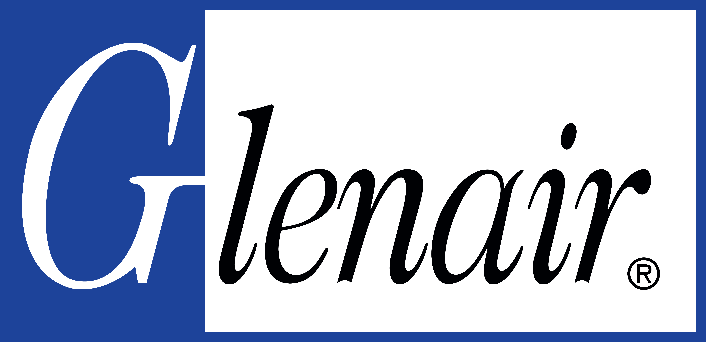

R&D RF Engineering Intern
Glenair
June 1 – August 21, 2026
Developed software and RF-test proof-of-concept systems for cable manufacturing, dielectric characterization, and automated antenna verification. The work combined signal processing, microwave measurements, mechanical design, electronics, and production-facing software.
Manufacturing software · DSP
Live Cable OD & FFT Analysis Software
Built production-facing software for RF cable manufacturing that streamed outer diameter measurements from LaserLinc laser gauges over OPC UA. The application performed live spatial FFT analysis, local-defect detection, PASS/FAIL logic, pause and reconnection handling, and automated engineering exports.
RF instrumentation · Material characterization
Microwave Cavity Resonator
Designed, simulated, manufactured, and VNA-tested a TE101 resonator to estimate the effective permittivity of finished PTFE and FEP cable-insulation constructions.
View case studyEmbedded RF test · Proof of concept
Handheld Antenna PASS/FAIL Tester
Integrated a Raspberry Pi, NanoVNA, display, battery power system, calibration recall, and automated 902–928 MHz sweeps into a field-oriented antenna verification prototype.
Additional team contribution: supported the development and testing of two high-speed cable constructions with Glenair’s high-speed cable engineering team.